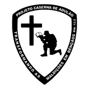
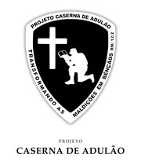
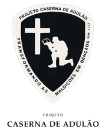
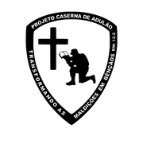
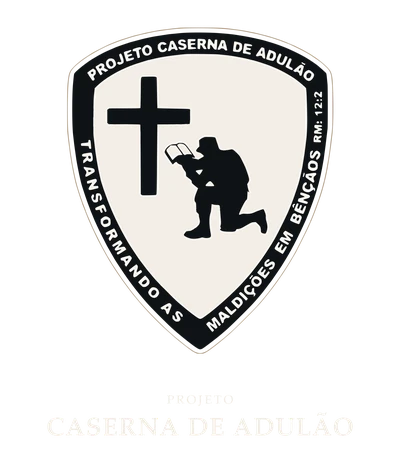
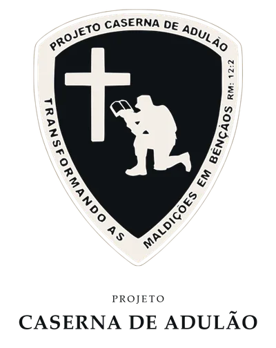

Capítulo 02
Logo
Escudo Master (tipografia fundida) é a logomarca. Pasta canônica
assets/img/logo-pca/. Colorização institucional: H1 homologado.
Master — variantes de cor

Lockup vertical
Composição opcional: Master + wordmark PROJETO / CASERNA DE ADULÃO em Palatino Linotype (Regular + Bold). Não substitui o Master.
- Fonte do escudo:
LOGO_PCA_Master_Mono_1C.webp(integral) - Apoio: Regular, ~48% do corpo, tracking 0.18em
- Nome: Bold, tracking 0.04em, largura ≤ 88% do escudo
- Geometria canônica 1781×2080 · SVG híbrido (WebP
data:+ contornos)
Variantes · fundo claro

…_Mono_1C_180.webp
…_Color_Institucional_180.webpVariantes · fundo escuro

…_Branca_FFFFFF_180.webp…_Color_Institucional_Reverso_180.webpEscalas (Color Reverso · fundo escuro)

400 · grande
180 · médio
128 · reduzido
Escalas (Color · fundo claro)

400 · grande
180 · médio
128 · reduzido
Clear space
Área livre aproximada de ¼ da altura do escudo em todos os lados (também ao redor do lockup completo).
Não usar
- Distorcer, rotacionar ou aplicar sombras/glow não documentados
- Recolorir fora da paleta PCA
- Substituir pelo logo do Discipulando
- Tratar o wordmark do lockup como substituto do Master
- Usar Georgia ou sans DaC no wordmark do lockup
H2 decidido: Master = logo; Lockup Vertical = composição Palatino (revisão).